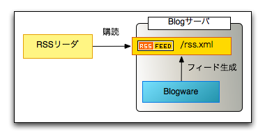
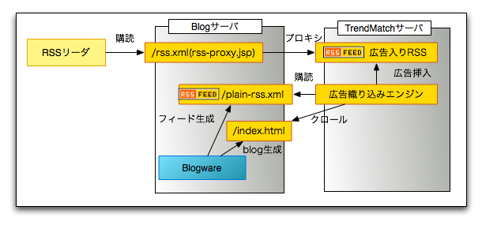
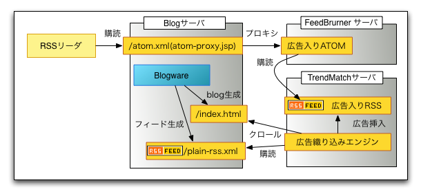
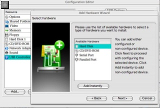
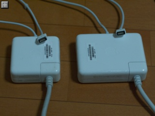
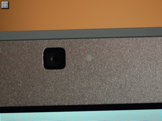
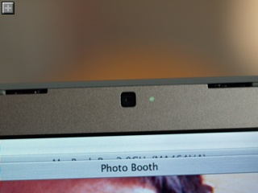
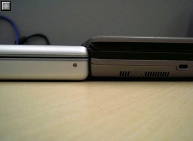

プレステ3：コンポーネントケーブル在庫薄！
昨日はケーブルが揃わずやむなくD1(DVD/アナログ地上波)画質でPS3をいじってました。
せっかくハイビジョン対応の36インチのWEGAなのでハイビジョンで映してあげないとバチが当たります。
というわけで、買いに行ったのですがどこに行ってもない、ない、ナイ！
PS3のAV Multi Out -> D端子 のケーブルはあるんですが、D端子よりやや高画質といわれるコンポーネントケーブルが全然みつかりませんでした。
ビックカメラ、GEO、トイザらス、コジマどこも品切れです。
最後の最後、ヤマダ電機でようやくみつけました。
ウチのテレビは D4(720p/1080i)対応みたいで、微妙にちらつくけど解像度の高い1080iでリッジレーサーを楽しんでいます。
HDMI 端子が付いていないハイビジョンテレビを持っていて、いずれPlayStation 3 を買おうと思っている人はとりあえずコンポーネントAVケーブルだけでも用意しておくと良いかもしれません。端子の形状は変わらないのでプレステ2用のものが使えます。
PS2用(残りあと１個でした)：
PS3用(12月7日発売らしい):
PS3用としてリリースするのは少し高くなりますが金メッキ加工していて、ケーブルの材質も良くなっているみたいです。
でもケーブルが長くなっているのは個人的にはマイナス。ちゃんと繋がる限り最短距離で繋げたいかな・・。
Playstation 3 ゲット！
歯医者に行った帰りにヨドバシカメラへ行ったらうまくタイミングが合って購入できました。
毎日フロス・ブラッシング・リステリン・キシリトールガムでしっかりケアしているご褒美でしょうか？
当初の発売予定だった春から待ち遠しかったです。
一緒に買ったソフトはリッジレーサー７。
かなり重かった
開けたところ
アップで
配線ごちゃごちゃ
PSX がコンポーネント端子で繋がっているのでそのままケーブルを利用できるかと思ってましたが、PSX側はD端子で、プレステのAVマルチアウトには適合しませんでした。
というわけでプレステはせっかくのハイビジョンをまだ活かせていません。
OSは最新のがインストールされているみたいでアップデートする必要はありませんでした。
TOEIC 受検
先日申し込んだ TOEIC。
今日があっという間に試験日がやってきました。
たぶん今回で3回目。実に4年半ぶりくらいの受検になります。
勉強の状況は我ながら呆れる見事な3日坊主 + 通勤/仕事中の podcast。
ちょっとだけ眺めたのはこちらの本。
試験会場は家から２駅でとても近かったです。
住所から近い会場を選んでくれているんでしょうか？
・顔写真？
最近仕組みがかわって認定証に顔写真を載せるようになったらしく、前日になって受験票に写真を貼っておく必要があることに気がつきました。
横着をして免許証の写真をスキャンしてプリント(本当はコピーは不可)したのですが、見事試験官に「顔写真が不鮮明、場合によっては認定証に顔写真が載らないかも」と注意され、その承諾のために「判断本部委任」とかなんとか書かされました。
きっと回収した受験票をコピーするのでしょう。孫コピーだと汚すぎて証明証としての意味が薄れてしまうということでしょうか。
幸い昇格試験とか絡んでいるわけじゃないので問題ないですが、次回は気をつけます。
・携帯/アラームチェックが厳しい！！
あと携帯電話や時計のアラームについてのチェックも厳しかったです。
電源を切ってくださいとアナウンス＋口頭での注意があるのに加え、試験官が各机を回って「携帯電話のボタンをどれか押すか、一旦電話を閉じて開いてください」と電源が切れているのをしっかり確認していました。
さらに「携帯電話の機種によっては電源を切っていてもアラームがなるので、確実にアラーム設定を解除してから電源を切ってください」とも。
同じ試験会場で受けていた妻はそんな確認はなかったらしいのでたまたま厳しい試験官に当たっただけかもしれません。
快適な試験環境を確保するためなので悪いことではありませんが。
・試験結果は？
さて、肝心の試験ですが、事前準備の甘さの割にはよくできました。
過去の試験ではリーディングが難しくて時間が足りず「えいやっ」で回答していた部分があったのですが、今回は全部通してまともに回答することができました。
ちょっと点数発表が楽しみです。
860点以の「レベルA (Non-Nativeとして充分なコミュニケーションができる)」を目指して早速次回の1月14日のテストも申し込んでしまいました。
・試験形式の変化について
試験形式が若干変わった点については、特に気にはなりませんでした。
#といっても前回受検したのは4年以上前なので良く覚えていませんが・・・
オーストラリアやイギリス人の発音も入っていましたがあまりベタベタなのはないので難易度は変わらないでしょう。
インド人や中国人の英語も混ざると面白いんですが・・・。
・試験速報？
問題は持ち帰れませんが、忘れないうちに復習できないかなーと、記憶を頼りに速報をしている人いないかなーと探してみたらありました。
- TOEIC第127回公開テスト講評
普段から TOEIC 対策を教えている先生のようです。
ちょっと覚えのない問題についても触れているので会場毎に微妙に問題がちがうのかもしれません（？）。
まったく理解できていなかったか、忘れただけかもしれませんが。
・スピーキング・ライティングのテスト
配られていたチラシに書いてあったのですが、スピーキング・ライティングのテストも始まるようです。
パソコンのマイクやキーボードを使って自宅で（？）受検するみたい。
さすがに採点が自動化できないためか受験料は9,975円とややお高いです。
完全に人手で採点するのであればむしろ安いかもしれませんが。
{kind=link}
JBuidler 2007 リリース
紆余曲折のあった JBuilder ですが、ついに出ました、 JBuilder 2007。
Eclipse の柔軟性と JBuilder の快適な操作性、どの程度融合しているか楽しみです。
・・しかし対象プラットフォームは Windows のみで Foundation は提供されない（まだされていない？）様子。
それどころかトライアルのダウンロード先すら見つかりません。
追記：
どうやら早とちりで英語版が第四四半期後半、日本語版は2007年第一四半期リリース予定みたいです。
Java屋が触る C# / その3 - Mac OS X で Mono のインストール・実行
・その1 - Visual Studio Express で Hello World
・その2 - コマンドラインでコンパイル・実行
・その3 - Mono のインストール・実行
・.Net って？
.NetFramework 自体は（たぶん）Windows 特有のブランドですが、その実行環境は Windows 固有の物ではなくて CLI(Common Language Infrastructure) という規格に乗っ取ったバーチャルマシンの一種です。
Java では基本的に言語と実行環境に密接なつながりがあり、例外的な環境を除いて通常は Java のソースコードをコンパイルして Java の実行環境で動作させます。
リンクするライブラリも Java で書いたものをクラスパスに通してロードするか、C / JNI を使ってコンパイルしたものをパスに通してネイティブコードを呼び出すしかありません。
CLI の場合は、それに準拠した言語であれば、そのコンパイル済みの中間バイナリ形式は言語の壁を越えて呼び出し、継承が行えるという便利な特性があります。
また中間バイナリ形式はもちろん特定の CPU 固有のインストラクションを含んでおらず、実行時にネイティブコードに変換されます。
これを Windows で実行する 環境の総称が .NetFramework です。
Microsoft が主導しているものの、あくまで CLI が先にあって、その規格に乗っ取った Microsoft製の実行環境が .Net 、といった感じです。
・Mono って？
その１でもちょっと触れましたが Mono は Unix(ライク) OS に移植された CLI の開発・実行環境です。
オープンソースのプロジェクトで誰でも無償で利用できます。
Novell がスポンサーになっていて商用利用のために年間2,500ドルからの有償サポートもあります。
・Mono のインストール
今回は Mac OS X 10.4.8 に Mono をインストールして Hello World を実行してみたいと思います。
インストーラはDownloadsからダウンロードできます。
インストーラは一般的な Mac のインストーラ形式です。実行すると/usr/bin/ 以下にいくつかのコマンドラインツールがインストールされます。
/usr/bin/mono /usr/bin/monodis
/usr/bin/mono-find-provides /usr/bin/monodocer
/usr/bin/mono-find-requires /usr/bin/monodocs2html
/usr/bin/mono-service /usr/bin/monodocs2slashdoc
/usr/bin/mono-service2 /usr/bin/monograph
/usr/bin/mono-shlib-cop /usr/bin/monop
/usr/bin/mono-xmltool /usr/bin/monop2
/usr/bin/monodiet
・HelloWorld のコンパイル・実行
Mono のコンパイラは csc ではなく、mcs というプログラムです。
class HelloWorld {
static void Main() {
System.Console.WriteLine ("Hello World");
}
}
$ mcs HelloWorld.cs
$ ls -la HelloWorld.*
-rw-r--r-- 1 yusukey yusukey 102 Nov 18 12:29 HelloWorld.cs
-rwxr-xr-x 1 yusukey yusukey 3072 Nov 18 12:29 HelloWorld.exe
$ ./HelloWorld.exe
-bash: ./HelloWorld.exe: cannot execute binary file
$ mono HelloWorld.exe
Hello World
Mono でも Windows と同じく .exe ファイルが生成されました。
ただ、Windows と違うのは直接実行できないことです。.exe ファイルを直接実行できるのは .NetFramwork が OS と密接に絡んでいる Windows の強みと言えるでしょう。
ちなみに mcs で生成した HelloWorld.exe を Windows 環境にコピーしたらそのまま実行できました。逆も然り。
・エラーメッセージも Microsoft の実装に準拠？
Mono は実行環境の動作に互換性があるのは当然ですが、コマンドラインツールのエラーメッセージも Microsoft 製のと同等のものが出力されるようです。
Windows の csc でソースファイル名を指定しない場合。
50727\csc.exe
Microsoft(R) Visual C# 2005 Compiler version 8.00.50727.42
for Microsoft(R) Windows(R) 2005 Framework version 2.0.50727
Copyright (C) Microsoft Corporation 2001-2005. All rights reserved.
fatal error CS2008: 入力が指定されていません。
Mono の mcs でソースファイル名を指定しない場合。
error CS2008: No files to compile were specified
Compilation failed: 1 error(s), 0 warnings
結構細かいところまで動作が忠実に再現されているのがわかります。
エラーコードの一覧はMSDNにありました。
残念ながら Safari では左ペインのツリーが Loading... と表示されたままちゃんと描画されません。
Mac で MSDN のドキュメントを見るには Firefox を使うのが良さそうです。
Java屋が触る C# / その2 - コマンドラインでコンパイル・実行
・その1 - Visual Studio Express で Hello World
・その2 - コマンドラインでコンパイル・実行
・その3 - Mono のインストール・実行
・言語を覚えるにはコマンドラインから！？
Java の世界では IDE なんて生ぬるいのを最初から使うと中で何がどうなっているかわかんなくなっちゃうからまずはテキストエディタと javac で覚えろ！なんてよく言います。
Microsoft の世界では Visual Studio が圧倒的な存在感を持つのでいちいちコマンドラインで慣れようなんて人は少ないかもしれません。
でもやっぱり中で何がどうなってるのかよくわからないのでやってみました。
・C# のコンパイラは何処に？
Java のソースファイル、*.java をコンパイルするのが javac なら、C#のソースファイル、*.cs をコンパイルするのは csc。
検索したら C:\WINDOWS\Microsoft.NET\Framework\v2.0.50727 にありました。
・コマンドラインで Hello World のコンパイル・実行
今回は IDE を使わずにコンパイル、実行してみたいので Visual Studio を開かずにホームディレクトリに cstest というディレクトリを掘り、その下に Hello.cs というファイルを作成しました。
ネームスペースについてマナーがよく分からないのでとりあえずデフォルトのネームスペースで昨日のコードとほぼ同じものを書きました。
あとは csc.exe でコンパイル。
クラスファイルの拡張子は Java と同じ .class かな？
とか考えていたらなんと実行可能形式の Hello.exe が生成されていました。
k\v2.0.50727\csc.exe Hello.cs
Microsoft(R) Visual C# 2005 Compiler version 8.00.50727.42
for Microsoft(R) Windows(R) 2005 Framework version 2.0.50727
Copyright (C) Microsoft Corporation 2001-2005. All rights reserved.
C:\Documents and Settings\Administrator\cstest>dir
ドライブ C のボリューム ラベルがありません。
ボリューム シリアル番号は CCCD-95FA です
C:\Documents and Settings\Administrator\cstest のディレクトリ
2006/11/16 23:55 <DIR> .
2006/11/16 23:55 <DIR> ..
2006/11/16 23:30 110 Hello.cs
2006/11/16 23:55 3,072 Hello.exe
2 個のファイル 3,182 バイト
2 個のディレクトリ 17,007,501,312 バイトの空き領域
C:\Documents and Settings\Administrator\cstest>
Hello.exe を指定するだけでそのまま実行できてしまいました。
Hello World
.NetFramework は明示的に呼ばなくても黒子のように勝手に起動してくれるみたい（？）です。
クラスパスもメインクラスも指定しなくて良いのは取っつきやすいですが、複数クラスがあった場合や、外部ライブラリが必要な場合はどうするのか Java 屋さん的には想像がつきませんね。
'Second Life' 仮想世界内で無限増殖！？
Second Life とは仮想世界の中での生活を楽しむ一種のゲームです。
ユーザに与えられるのはその世界そのもので、中で何をするのかは自由。
ただ、ゲームの中には実際に経済があって、ゲーム内で使う通貨Linden を現実世界のお金で買って(現在$1=271Lindens)生活します。
で、何が話題になっているかというと、CopyBot と呼ばれる仮想世界内で物体を複製するプログラムが現れたそうです。
- CNET.com - 'Second Life' faces threat to its virtual economy
当然物が無尽蔵に増えれば仮想世界内の経済もバランスがとれなくなります。
さらに問題なのは Second Life を運営（経営？）する Linden Lab が、この問題に対して有効な対応策を編み出せるかどうかハッキリしていないことです。
現在のところはこの手のツールを使ったアカウントは抹消するということで沈静化を試みているみたいです。
米国では数々のリアルワールドの会社が仮想世界内に出店し始めて、ビジネスモデルを構築しようと奮闘している段階らしいのでなにかと混乱を呼んでいるようです。
なんだか冗談のようですが・・。
Java屋が触る C# / その1 - Visual Studio Express で Hello World
・ Java 屋が触る C# / その1 - Visual Studio Express で Hello World
・ Java屋が触る C# / その2 - コマンドラインでコンパイル・実行
・その3 - Mono のインストール・実行
C# は Microsoft が主導して規格制定している Java によく似た言語です。
コンパイルされたクラスは Windows ネイティブではなく、.NetFramework 上で動作するための中間コードになります。
最近では Windows 以外の環境で .Net のコードを動作させる環境 - Mono が盛り上がっており、マルチプラットフォームのアプリケーションを開発する基盤として Java に次ぐ選択肢となり得ます。
それどころか Mono の上で Java や Python, Ruby を動かすこともできるようです。
言語に依存しない実行環境である .NetFramework の特徴をうまく利用していますね。
- http://www.mono-project.com/Languages
Mono の上で Eclipse を動かしているというスクリーンショットもあります。Java との互換性は相当進んでいるのではないでしょうか。
Mono を使ったマルチプラットフォームアプリケーションとしてはimeemがあります。
これは "Social Media" を謳うアプリケーションで、基本は Yahoo! Messenger、Windows Live Messenger、AIM といった各プロトコルに対応するチャットクライアントです。
面白いのはチャットクライアントをベースに写真や動画を共有することができたり、友達の友達、といった形で辿ったりすることができる新しいコンセプトのツールです。
もともと Windows 用に作ったアプリケーションですが、Mac 版を１から作らなくて済むよう Mono を利用してコードの大幅な共通化を図っているとのことです。
ダウンロードして動かしてみれば分かりますが、Cocoa のネイティブアプリケーションと変わらないルック＆フィールで自然に動きます。
Mac OS X 上で動く imeem
というわけで、個人的に注目していたのですが、なかなか手がつけられないでいました。
そんなところ、ちょうど最近仕事で C# の API を触る機会があり、さらに Paralles Desktop 上で Windows XP が快適に動くという状況なので C# プログラミングを楽しんでみることにしました。
Java エンジニアの視点で、今回はひとまず Hello World を実行するところまでやってみたいと思います。
・Visual Studio Express のインストール
Visual Stuidio Express は Microsoft が提供する無償のプログラミング環境で、商用利用もできるそうです。
まず、ダウンロードしたのは CD イメージ。
- Visual Studio 2005 Express Edition - CD イメージからのインストール方法
上記ページには CD イメージを焼かずに Windows で直接マウントする方法が書かれていますが、今回は Mac 側に iso イメージをダウンロードして Parallels Desktop で指定してマウントしました。
インストール自体は特に迷うことなく簡単にできました。
・Hello World の作成
とりあえず Hello World を作ります。GUIを持たないアプリケーションを作るには[ファイル>新しいプロジェクト>コンソール アプリケーション] を選択します。
すると、以下のようなアプリケーションの雛形が作成されました。
{kind=link}
using System.Collections.Generic;
using System.Text;
namespace ConsoleApplication1
{
class Program
{
static void Main(string[] args)
{
}
}
}
Java との大きな違いは import が using に、package が namespace に、クラス名だけじゃなくメソッド名も大文字になっているといったところでしょうか。
Hello World とコンソールに表示させるのは簡単。
以下のメソッドを Main メソッドに追加するだけです。
System.Console.WriteLine("Hello World");
太古の昔にどこかの雑誌で読んだ記事の記憶を頼りに、特にリファレンスを見ることなく書けてしまいました。
実行ボタンを押すと・・・一瞬コマンドプロンプトが表示されたかと思うとすぐ消えてしまいますが、一応動いているようです。
あまりに一瞬なのでスクリーンショットは撮れませんでした。
Visual Studio で Hello World
とりあえず C# に触れることが出来ました。
最後に比較のため、C# と Java の同等のコードを載せます。
- C# のコード: Program.cs
{
class Program
{
static void Main(string[] args)
{
System.Console.WriteLine("Hello World");
}
}
}
デフォルトで宣言されていた using System; は省略してもコンパイルできました。
Java でいう java.lang.* のパッケージと同じく暗黙的に使えるようになっているようです。
- Java のコード: Program.java
class Program
{
public static void main(String[] args)
{
System.out.println("Hello World");
}
}
}
なぜだかよく分かりませんが C# は Main メソッドは public でなくても良いようです。
次回はたぶんコマンドプロンプトからコンパイル・実行する方法を調べてみます。
Duke がオープンソース化
みんなに愛されるJava のマスコット、Duke が BSD ライセンスでオープンソース化されたようです。
・James Gosling: on the Java Road - GPL V2 wins!
・java.net - duke
Web サイトに載っけるときは BSD ライセンスの文章をいちいち掲載しなくて良いとのことです。 とりあえずキレイな絵を一つ拾ってきました。
くじらの刺身
学校給食でくじらを食べた世代じゃないので、鯨経験は、どっかのレストランでサラダにちょこっと入ったベーコンを食べたことがある程度です。
でも日本人として鯨の味は知っておきたいモノだと、なんとなく興味はありました。
で、先日スーパーをトコトコと歩いていると、なんと刺身コーナーに鯨さんがいらっしゃいました。
これは珍しい（？）と思わす購入。早速食べてみました。
くじらの刺身
しょうがのすりおろしがついてきたので、しょうが醤油で食べました。
しょうがで食べるって事は結構臭みがあるのかと思いましたが、それほど気になりませんでした。
ほんのり甘く、ちょっと生々しい・・・、なんだか脂肪分の少ない桜肉といった感じでしょうか。
とても美味しく頂きましたが、ちょっとクセがあるので好き嫌いが別れるかも。
鯨の数は以前に比べてだいぶ回復してきていると聞くので、堂々と捕鯨ができて普通に食卓に並ぶ日が来て欲しいものです。
{kind=link}
フィードの URL を変えずに RSS/RDF/ATOMフィードに広告を挿入
Trend Match for feedsというサービスを使ってフィードに広告を入れてみました。
Trend Match は Google の AdSense と同じくコンテンツの内容を見て適切な広告を埋め込んでくれることになっています。
それなりに読者が興味をもつ広告が表示されればうるさくは感じないと思うんですが・・・どうでしょう。
日本語の処理は強み！と謳っています。
・CNET - コンテンツ連動型RSS広告でブロガーが稼げる--RSS広告社が個人向けで初
自分のサイトで用意しているフィードのURLを登録すると、先方で広告入りのフィードを生成してくれるという仕組みになっています。
提供されるフィードのURLをサイトに埋め込めばいいのですが、既存のフィードのURLをサブスクライブしている人には広告が表示されないのが悩ましいです。

既存のフィード購読のイメージ
なので、blogではいつもと違うURLにRSSを生成し、Trend Match にはそちらを読み込ませるようにしました。
で、いつものフィードからはTrend Match より提供される広告入りのフィードをリバースプロキシして配信する作戦。
今回は以下の様な簡単なJSPを作って実現しています。
・rss-proxy.jsp
import="java.net.URL,java.net.HttpURLConnection
,java.net.URLEncoder
,java.io.BufferedReader
,java.io.InputStreamReader"
session="false"%><%request.setCharacterEncoding("UTF-8");
%><%
URL url = new URL("広告入りフィードのURL");
HttpURLConnection con =(HttpURLConnection)url.openConnection();
con.setRequestMethod("GET");
con.connect();
BufferedReader bw = new BufferedReader(new InputStreamReader(con.getInputStream(),"UTF-8"));
String line;
StringBuffer buf = new StringBuffer(128);
while(null != (line = bw.readLine())){
buf.append(line).append("\n");
}
bw.close();
byte[] buf2 = buf.toString().getBytes("UTF-8");
response.setContentLength(buf2.length);
response.getOutputStream().write(buf2);
%>
つまり[オリジナルフィード(RSS) > Trend Match で広告挿入(RSS) > JSP でリバースプロキシ]という構成になります。

オリジナルのURLで広告入りのフィードを配信
JSP ではなく、Apache の mod_rewrite を使う場合はこんな設定になるでしょうか(検証してません)。
RewriteRule ^/blog/../../diary/rss.xml$ http://rss.rssad.jp/rss/****************
こういう柔軟なことができるのは自宅サーバで運用しているblogの強みですね。
最初から Trend Match に対応した blog サービスもあるみたいなので、それらではもっと簡単に実現できるのかもしれません。
もうひとつ問題になったのはフィードのフォーマットです。
Trend Match では RSS 形式のフィードしか作ってくれません。
ATOM 形式として購読しているリーダに RSS 形式が配信されると混乱してしまうのか、各エントリが２つずつ表示される現象がありました。
自分で Trend Match のフィードを ATOM 形式に変換するのは面倒なので、FeedBurnerというサービスを利用しました。ここでは無償でフィードを各種フォーマットに変換するサービスがあります。
つまり[オリジナルフィード(RSS) > Trend Match で広告挿入(RSS) > FeedBurner で変換(ATOM)> JSP でリバースプロキシ]という多段プロキシになります。

オリジナルのフィードURLで広告入りATOMフィードを配信
Parallels Desktop for Mac の仮想ハードディスクサイズを拡張する方法
会社で支給されている Dell のノートをほとんど触らなくなってしまったくらいParallels Desktop for Macは重宝してます。
ただ、本格的に使い始めるとデフォルトのハードディスクサイズである7GBではちょっともの足りなくなってきます。
そんなときのため、Parallels Desktopには、新規に環境を作って OS をインストールしなくても済むよう、仮想ハードディスクの拡張やデフラグメンテーションを行ってくれる ImageTool というアプリケーションがついています。
しかし、ただ拡張を行ってもちゃんと認識してくれません。
物理的には容量が増加したように認識しても、論理的なパーティションの設定が変わっていないような雰囲気。
ヘルプを見ても特に書いてないんですが、ちょっと調べたらコツがありました。
・Parallels Support Forum > Technical Discussions > Parallels Desktop for Mac
- How I resized a Windows partition
具体的な手順は以下の通り：
1. Windows をシャットダウンしてハードディスクイメージをコピー
イメージをコピーしたところ
2. コンフィグレーションにコピーしたハードディスクを設定
Edit > [Configuration Editor] > Add... > Next > Hard Disk > Use an existing hard disk image > ドライブファイルを選択

コピーしたイメージを２つめのドライブに設定
3. Windows を起動してコマンドプロンプトを開き、diskpart コマンドで拡張
diskpart コマンドは Windows に付属する動的にパーティションを設定するツールのようです。
起動ディスクはリサイズできないため、このような操作が必要になるものと思われます。
{kind=link}
Microsoft DiskPart version 5.1.3565
Copyright (C) 1999-2003 Microsoft Corporation.
コンピュータ: YOUR_PC_NAME
DISKPART> list volume
Volume ### Ltr Label Fs Type Size Status Info
---------- --- ----------- ---- ---------- ------- --------- --------
Volume 0 D CD-ROM 0 B
Volume 1 C NTFS Partition 7985 MB 正常 システム
Volume 2 E NTFS Partition 7985 MB 正常
DISKPART> select volume 2
ボリューム 2 は選択されたボリュームです。
DISKPART> extend
DiskPart はボリュームを正常に拡張しました。
DISKPART> exit
DiskPart を終了しています...
C:\Documents and Settings\Administrator>
4. Windows をシャットダウンして、オリジナルのハードディスクイメージを削除
5. diskpart で拡張したハードディスクイメージを選択
{kind=link}
7GB から 20GB に拡張された C ドライブ
Linux でも同様のテクニックが使えると思いますが、diskpart に相当するコマンドは今のところ知りません。
NetBeans 5.5 リリース
いつのまにかベータが解けて NetBeans 5.5 がリリースされていました。
http://www.netbeans.org/
プラグインとか気にせずインストールしたらそのまま使えるのが魅力的です。
入れてみましたがサクサクっと動いてかなり快適です。
ただ JSP の編集中に例外が発生して保存ができないバグに遭遇しました。環境依存かもしれませんが。
様々なプラグインから選んで好みの環境を作れるのが Eclipse の魅力だと思いますが、同じ事をするのに共通の方法がないことになります。
なので、
「war ファイルってどうやってつくるの？」
「プラグインは何使ってる？」
「えーと・・・WTP?」
「うーん、Lombozしかわかんないや」
とかいうことが発生します。
ネイティブのGUIエレメントが使えるのでプラットフォームのL&F;を継承するし高速！という触れ込みの SWT も今では Swing と比べて特別速いということはないですね。
しかもルック＆フィールもOSネイティブというよりは、「SWTです」って顔になっちゃってて、むしろ Swing の方が OS と馴染んでしっくりくる L&F; を提供してくれます。
個人的には本命は JBuilder なんですが、どうなんでしょう？
2006年Q4に出荷予定のはずですが・・。
Instant WebLogic
を公開しました。
一発 WebLogic の英語版です。
デプロイメントデスクリプタのリンク、検索フォームが英語版に飛ぶようになっています。
日本語を読み書き出来ない WebLogic ユーザにオススメください。
・Instant WebLogic
http://yusuke.homeip.net/wlgenkan/en/index.html
"Instant WebLogic" is a simple web page consists of several links for WebLogic documents, deployment descriptor pages and search forms for each versions.
It also contains quick links for the Administration Console.
Using the quick link, you even don't have to type user name and password to enter the console.
これに伴い日本語版 一発 WebLogicのURL は
http://yusuke.homeip.net/wlgenkan/ja/index.html
へと変更になっています。
従来の URL へアクセスしても Accept-Language ヘッダを見て日本語版、英語版へ自動的にリダイレクトする仕組みになってます。
MagSafe 電源アダプタ 60W で MacBook Pro を動作させる
MacBook Pro に付属するACアダプタは電気ポットのように磁石でくっつく "MagSafe 電源アダプタ" です。
強い力が加わっても机から本体が落ちることなく外れるようになっています。
実際今まで何度か足を引っかけて壊しそうになったことがあるのでうれしい改良です。
手元にいくつかあるアダプタが流用できないのがちょっと残念ですが・・・。
MacBook Pro は電気を食うのか付属しているアダプタは 85W の比較的大きいものになります。
これはちょっと持ち運びにもかさばるので、MacBook の 60W のアダプタを試してみましたが、問題なく使えるようです。
動くけど充電はできない、ということもありませんでした。

MagSafe電源アダプタ60W(左)と85W(右)
もしかすると充電に時間がかかったりするのかもしれませんが、２まわりくらいコンパクトなので２つ目のアダプタには良いですね。
{kind=link}
MacBook Pro (late 2006) Photo レビュー
MacBook Pro、すこぶる快適です。
PowerBook と比較しながらいくつか写真を撮りました。

ウワサの iSight インジケータ。LEDの光が細かい穴を抜けて見えます
ちょっとピントが正確にはあっていないので見にくいですが、実際はもっとハッキリ光っています。
普段は肉眼では穴は見えません

遠目に見るとこんな感じ
PowerBook との厚さ比較。結構薄くなっています
ちょっと離れて見ても薄くなってるのが分かります。
いつの間にかS出力がなくなっているのが残念。２回くらいしか使ったことないけれども。
左側ではモデムポートが省略されてます。
あと吸排気の仕組みが変わったのかスリットがなくなりました。
薄くなったのと同時に横幅は１cmくらい長くなっています。

これは会社で支給されている Dell のノート、Latitude D620 との比較。
大げさに言えば MacBook Pro は D620 の液晶部分を取り除いたくらいの厚さしかありません。
ちなみにこの D620 は Core Duo 2.16GHz。
{kind=link}
{kind=link}
{kind=link}
{kind=link}
{kind=link}
{kind=link}
Parallels Desktop で Windows Vista インストール
ものは試しということで Windows Vista をインストールしてみました。
新しくパーティションを用意する必要がないのでこういった作業にはやはり仮想環境は便利です。
Parallels は今のところ DirectX に対応していないのでより "Mac っぽい" 表示にできる Vista ご自慢の Windows Aero は有効にならない模様。
ちょっとがっかりしたのはコマンドプロンプトに代わり映えがないこと。
相変わらず不必要に改行が入りまくる矩形選択しかできないし、タブ表示で複数のコンソールを内包させたりもできないみたいです。
Parallels が DirectX に対応するまではひとまず放置決定。
{kind=link}